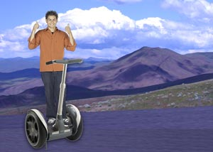

20/08/2005 - (Agosto)

Bem, já percorri 5.000 km e passei por alguns lugares muito interessantes no caminho
- Piripiri, PI
- Passa e Fica, RN
- Chão de Alegria, PE
- Conquista dOste, MT
- Feliz Natal, MT
- Bofete, SP.
14/07/2005 - (Julho)
Vi algumas placas de estilo antigo nas laterais da estrada hoje:
"Atenção motorista:
quando você não enxerga durante a ultrapassagem,
talvez encontre a eternidade."
Definitivamente, não ultrapassei nenhum carro!
02/06/2005 - (Junho)
Meu primeiro dia de viagem! Não posso acreditar que finalmente arrumei tudo e estou pronto para partir. Como estou em um Segway, não pude trazer muita coisa comigo:
- Telefone celular
- iPod
- Câmera digital
- E uma barra de proteína.
Apenas o essencial. Como já disse Lao Tsé: Uma jornada de milhares quilometros começa com apenas um Segway.